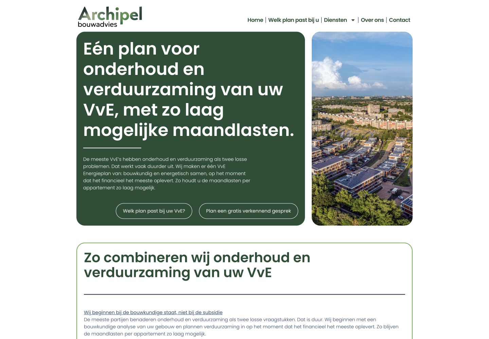
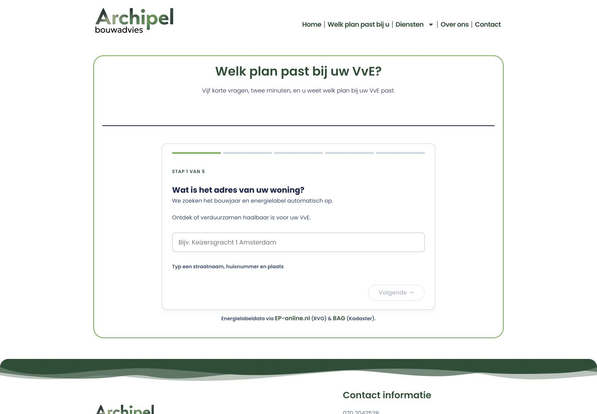
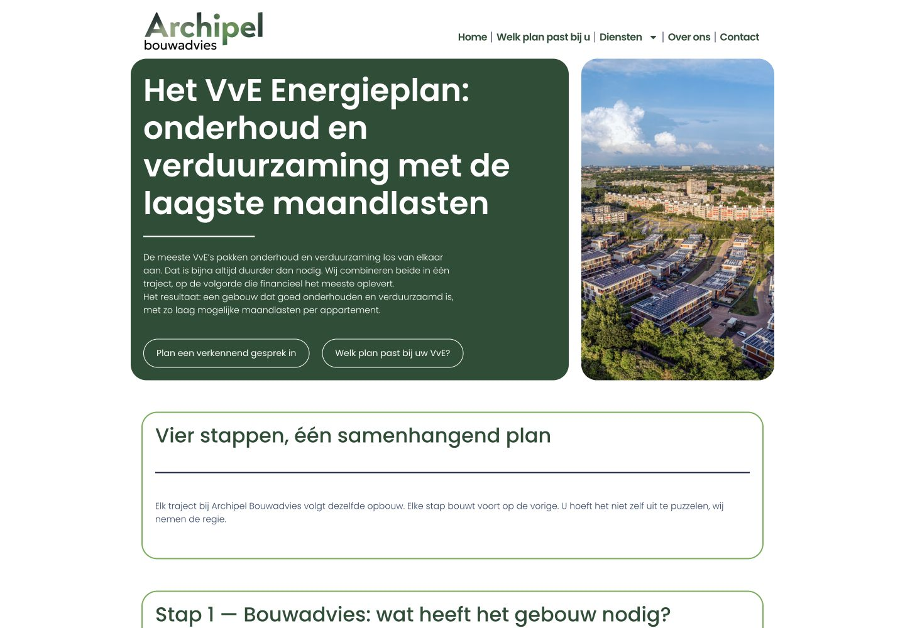

Case
Website met aparte routes per adviesvraag — Archipel Bouwadvies
Voor Archipel Bouwadvies maakte ik een website met aparte routes voor VvE-inspecties, verduurzaming en advies. Een bestuur kan direct naar de uitleg die bij de eigen vraag past.



Vraag
VvE-besturen beginnen met verschillende vragen
Archipel Bouwadvies helpt kleine VvE's met inspecties, energieadvies, subsidies en de afstemming met aannemers. Een bestuur dat zich oriënteert op verduurzaming begint met een andere vraag dan een bestuur dat een inspectie of adviestraject nodig heeft. De site moest die vragen herkenbaar maken én de samenhang tussen de diensten bewaren.
Aanpak
De inhoud is geordend rond de vragen van VvE-besturen. Rustige uitleg en gerichte keuzes leiden van de eerste oriëntatie naar verdieping, zonder onnodige vaktaal. De route naar contact blijft daarbij steeds bereikbaar.
Oplossing
De homepage geeft de hoofdlijn en toegang tot de belangrijkste onderwerpen. Eigen pagina's voor het verduurzamen van een VvE en het adviestraject bieden verdieping, terwijl de navigatie compact blijft.
Uitkomst
Aparte pagina’s voor inspectie, verduurzaming en advies
De navigatie verwijst naar de verschillende diensten. Op de pagina’s kunnen VvE-besturen zich inlezen en contact opnemen over hun situatie.
Staat jouw bestaande site in de weg van zo’n duidelijke route? Lees wanneer je een website kunt verbeteren of opnieuw laten maken.
Herkenbaar?
Beginnen je bezoekers met verschillende vragen?
Ik kijk met je mee welke vragen bezoekers hebben en hoe je die zonder omwegen naar de juiste uitleg leidt.